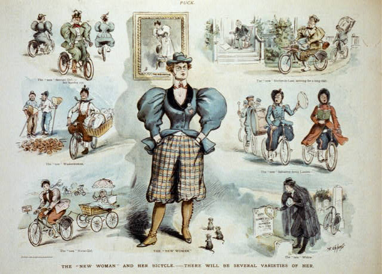
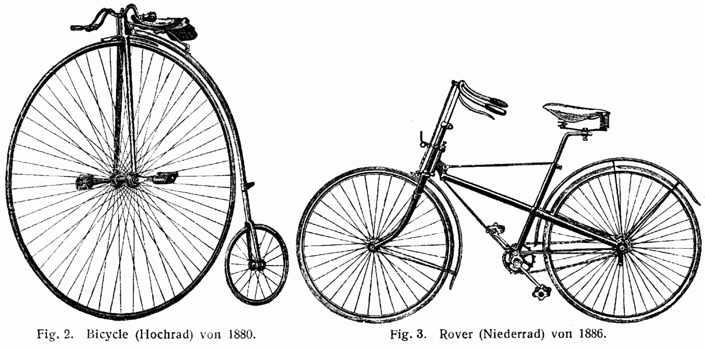

With the turn of the century came the rise of modernism which rejected the romantic-era views in favor of modern ones, and my essay will go over how with modernity came new formations of power through revolutionary technology. Also, how gender expression became a tool for a movement called the New Woman which featured women who fought for rights and freedoms through traditionally masculine traits and attributes from wearing pants to smoking cigarettes to attending university. Through the concept that gender is socially constructed with the New Woman as my primary example, here I argue that since the start of the modern century, gender is a system of power under which marginalized people can achieve liberation through self-fulfillment, and this liberation is ever aided by technology. However, the power to achieve self-fulfillment is not available to all people equally so, through understanding the modernist problems within the intersection of gender and technology, in order to achieve true equality in who is able to actualize themselves, as a society we must subvert and dismantle the power that these systems grant in our current day.
To prove that gender is a system of power that can liberate people under, I will first have to define its power. In the essay Power by Nick Couldry, within the Keywords collection, that titularly defines power, he differentiates the existence of symbolic power as something that can control ideas that are socially constructed (2014). Since gender is a social construct in and of itself, with Couldry's idea of symbolic power, I claim that the symbolic power gender possesses grants those who use it the power to change itself as a construct. In other words, people can use their gender identity and expression to change what gender means as a whole. An example of using the symbolic power of gender to reconstruct social reality was a movement at the turn of the twentieth century that shifted modern culture strong enough to change how the feminine gender was defined: the New Woman. Winnifred Harper Cooley was an American author who graduated from Stanford University in 1896, was a part of this new movement, and in 1904 she would go on to write The New Womanhood where she says, “The finest achievement of the new woman has been personal liberty (p. 31).” Cooley's point was that this new form of feminine gender expression was a tool for subjugated women to gain new personal freedoms.

Print shows a vignette cartoon with "The 'new woman'" standing at center, wearing pantaloons with her hands in her pockets and looking defiant. From The "new woman" and her bicycle - there will be several varieties of her [Print], by F. Opper, (1895). In the public domain.
On the other hand, gender as this powerful social constructor can also be used by people already in positions of power to exclude subsects of people into discrimination. It is often said that the Second World War stands as the most devastating event in modern history, also that James Joyce's Ulysses (1922) stands as the most notable piece of modern literature. The intersection between the two is written about by Maren Linett—who is a Professor of English at Purdue University, and her research focuses on modernist literature and Jewish studies—in the essay The New Womanly Mensch? Modernism, Jewish Masculinity and Henry Roth's Call It Sleep which is found as chapter seven in Modernism and Masculinity (2014). Linett writes about how in Ulysses (1922) the protagonist is mocked for the femininity that is stereotypically attributed with his Jewish background, and she then mentions how during the turn of the century, discrimination against Jewish people was often derived from an effeminization of their ethnic features (p. 124). Prejudice and bigotry against Jewish people wasn't new in modernity, but it certainly peaked with the genocide that took place during the second world war. I observe from this that the social power of gender only steers towards the masculine, since femininity was used to treat Jewish people as inferior and was what the New Woman rejected in order to gain new freedoms. This direction of power excludes feminine people rather than empowering them.
Circling back to The New Woman, the rise of a new social gender through expression wasn't the only thing that granted them new freedoms. In and around the turn of the century came with it the invention of the “safety” bicycle which resemble bikes we use today, and in my opinion, were not comically impractical like the previous bicycles. In relation to the New Woman and the technology which gave her freedom, Lena Wånggren from the University of Edinburgh—who researches gender and feminist theory—wrote about how the bicycle assisted their unprecedented gender expression in her book Gender, Technology and the New Woman (2017). Wånggren writes, “The specific technology most commonly associated with the New Woman and her 'unsexing' potential is the bicycle, with the loosening of social restrictions and the geographic mobility that it allowed (p. 63).” She claims in her book that not only did the technology of the bike give these women freedom in travel, but it also aided their modern gender expression because of the impracticality of wearing a Victorian, romantic-era dress while riding. I believe that self-actualization can only be achieved once a myriad of needs have been met such as physical safety and health, a fulfillment of social responsibilities and connections, but as well as gender euphoria in both identity and expression. Regarding the New Woman, I am inclined to think that the women in that movement were able to actualize themselves through individuation with a fulfilled gender identity.

Note: An 1880 penny-farthing (left), and a 1886 Rover safety bicycle (right) from Lexikon der gesamten Technik (dictionary of technology). From Drawings of a penny farthing and a safety bicycle [Print], by Lueger, O. (1904). In the public domain.
Just as the bicycle was innovated circa 1890 to become more available to both use and to buy, the same thing happened to the car circa 1920 with assembly lines for more efficient production. Come 1950 they were wildly popular to own, at least for some. Danya Glabau from the Brooklyn Institute for Social Research has a PhD in Science and Technology Studies and wrote an essay which she published online titled Do Cyborgs Have Politics? (2017) wherein she starts with an introduction about cars and class. Glabau writes about how overpasses that lead to Long Island beaches were built too low for public transport to traverse which led to people who couldn't afford a car not being able to visit these beaches (para 1). She implies that because of the systematic racism in America, the poorer people who couldn't visit these places were disproportionately black and brown. Even though the innovative technology granted freedom to the women who could afford it, the same concept excluded people of color to those same freedoms. These liberties are not equal.
Modernity was a time of cultural revolution that took place over one hundred years ago now, but the social problems are still prevalent today. Gender is still a powerful social constructor and it is still aided by technology, however since now we are in late-stage capitalism the gap between who can afford these technologies is only widening. Also, the problem of gender only having more power the closer to the masculine it is, is still a relevant issue which is slowly being addressed in third-wave feminism, but it is still an issue nonetheless. The way to solve these issues is to dismantle the systems which grant these powers of gender and technology: the patriarchy and capitalism respectively. It's easier said than done, I know, but through activism, protesting, and unionizing, we will be able to ensure personal liberties through self-fulfillment in gender which will be aided by technology available to all.